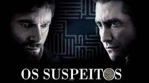

Breanking Bad
Curto: 100/100
Breaking Bad (Chutar o balde):
Fala sobre um professor do secundário com cancer de pulmão terminal.
Ele junta-se a um ex-aluno para fabricar e vender metanfetaminas
como forma de garantir o futuro da sua família.
Para saber mais Clique aqui!
O livro de eli
Curto 100/100

O livro de Eli:
Trinta anos depois da guerra ter dizimado o mundo,
um guerreiro solitário chamado Eli caminha por horizontes
arruinados dando esperança para os que restaram.
Apenas um outro homem compreende o poder de um
livro que Eli carrega e está determinado a se apoderar dele.
Apesar de Eli preferir a paz, ele arriscará a
sua vida para proteger a sua carga preciosa, pois precisa
cumprir o seu destino de ajudar a restaurar a humanidade.
Para saber mais Clique aqui!
Os Suspeitos
Curto 100/100

Os Suspeitos:
Depois que sua filha de seis anos
e uma amiga dela são sequestradas,
Keller Dove, um carpinteiro de Boston,
enfrenta o departamento de polícia e o
jovem detetive encarregado do caso para
fazer justiça com as próprias mãos.
Para saber mais Clique aqui!
The Batman
Curto 80/100
The Batman:
Após dois anos espreitando as ruas
como Batman, Bruce Wayne se encontra
nas profundezas mais sombrias de Gotham
City. Com poucos aliados confiáveis,
o vigilante solitário se estabelece
como a personificação da vingança
para a população.
Para saber mais Clique aqui!